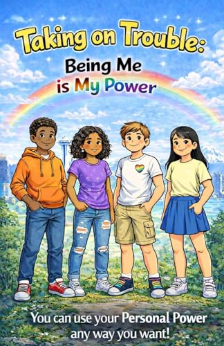
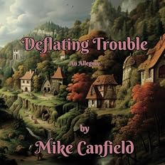
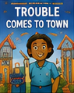
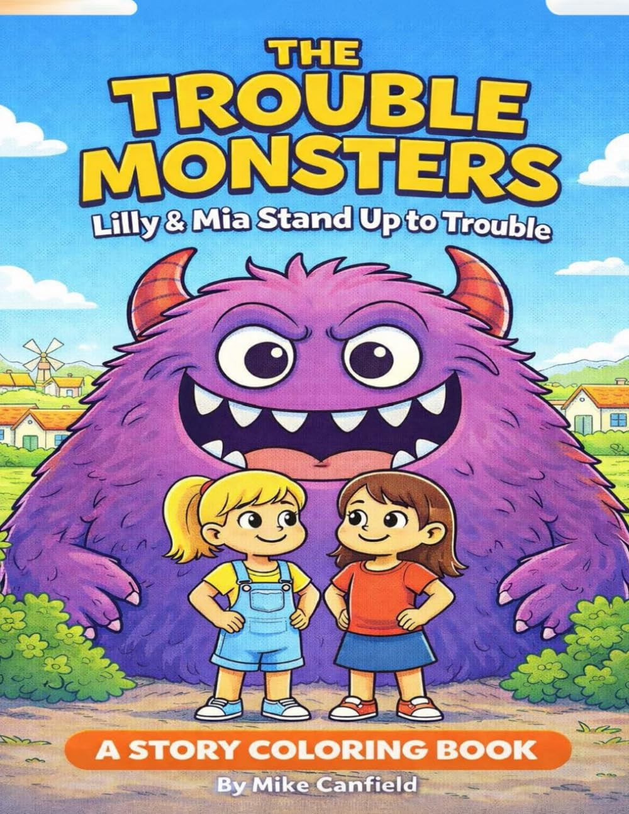
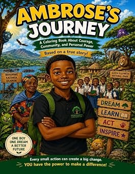
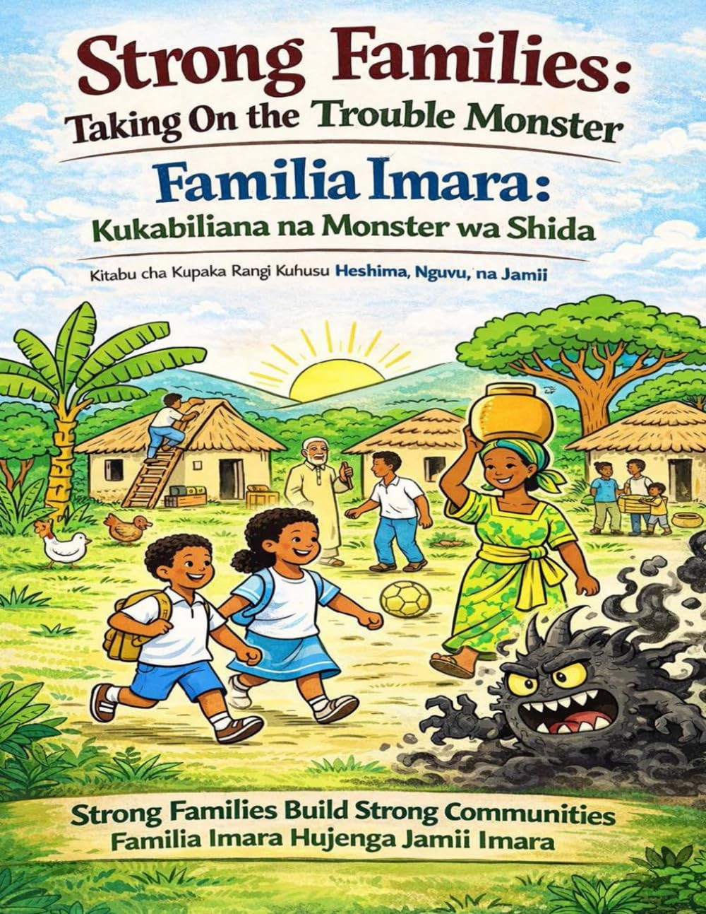
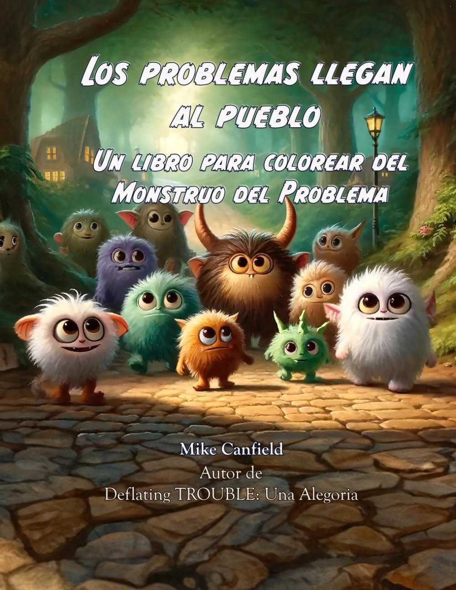
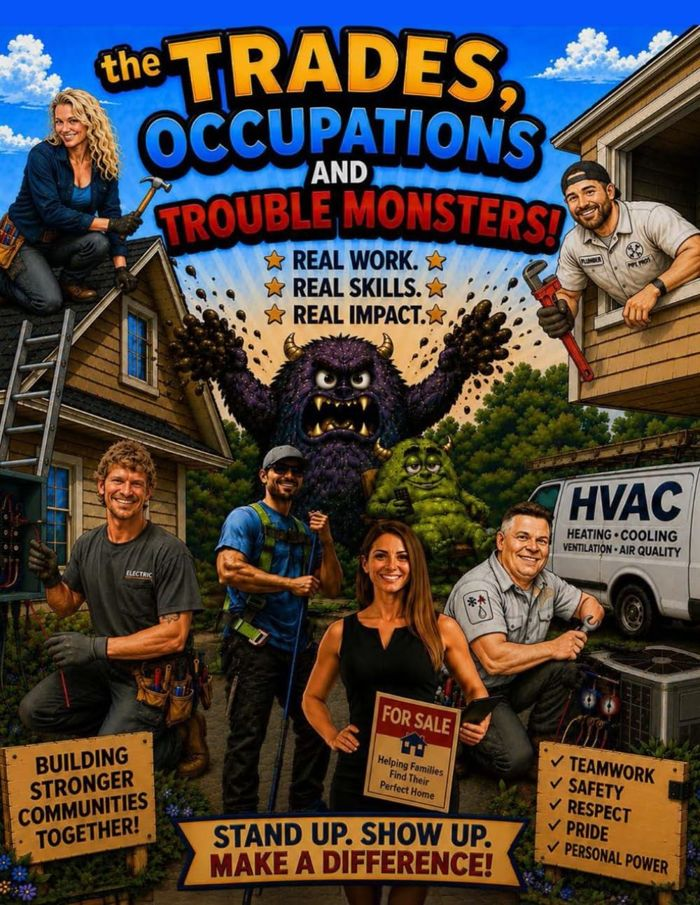
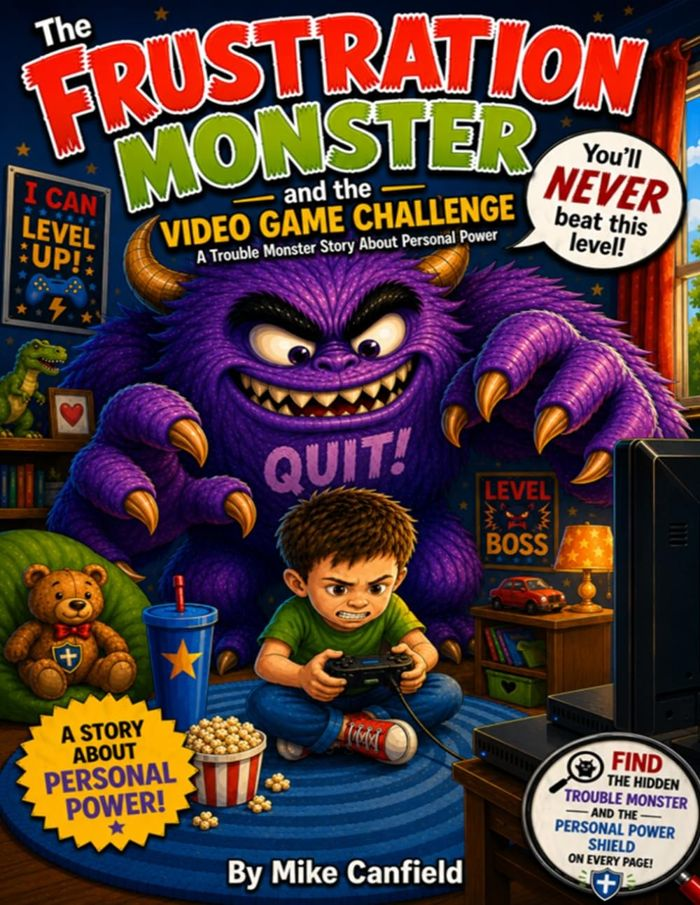
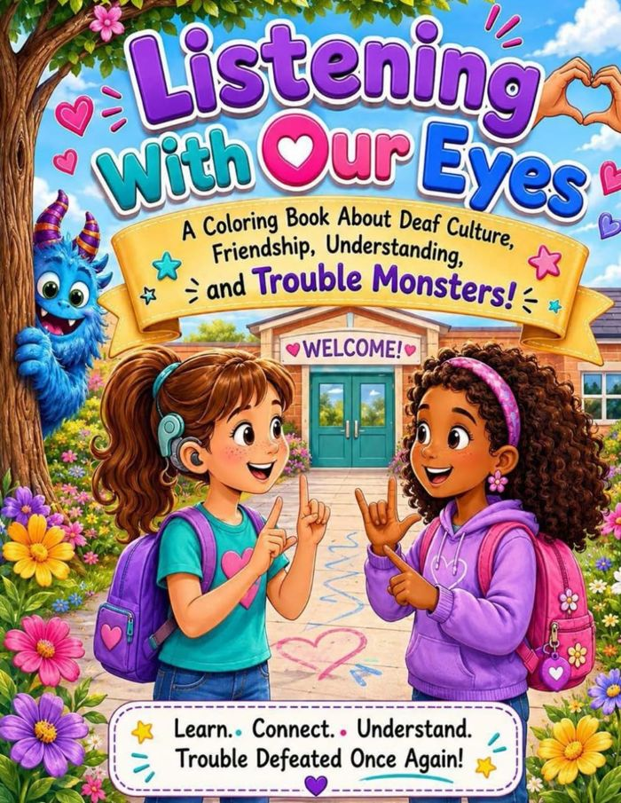

Read together, color together, and talk about the challenges
that matter in your family. Explore Mike Canfield’s books
on Amazon for available editions.

CONFIDENCE & BEING YOURSELF
A reminder that being yourself is a source of Personal Power. Explore what it means to value who you are, respect others, and make choices that feel true to you.

UNDERSTANDING TROUBLE
Meet Trouble through a story about Personal Power. Read together and explore how kindness, courage, and connection can help make Trouble smaller.

FAMILIES & COMMUNITY
What happens when Trouble arrives in a community? This coloring book invites children and caring adults to notice challenges, talk about helpful choices, and discover the strength of standing together.

COURAGE & FRIENDSHIP
Join Lilly and Mia as they stand up to Trouble together. Their story opens conversations about friendship, courage, and using Personal Power with support from others.

HOPE & COMMUNITY
A story of hope, courage, and community set in Uganda. Follow Ambrose’s journey and use coloring time to talk about challenges, dreams for the future, and the people who help us move forward.

STRONGER TOGETHER
Explore family strength and taking on Trouble together in English and Kiswahili. A shared reading and coloring experience that invites families to talk about connection, support, and Personal Power.
View this book on Amazon: Strong Families / Familia Imara

SPANISH EDITION
Explore Trouble and Personal Power through a Spanish-language coloring book. Read, color, and start conversations about helpful choices and the strength of a community working together.
View this book on Amazon: Los problemas llegan al pueblo
EXPLORE YOUR FUTURE

Discover trades and occupations through coloring, real-world work, and Personal Power. Meet the Trouble Monsters that can get in the way, explore helpful skills, and imagine what you could do in the future.
PATIENCE & PERSISTENCE

When a video game becomes frustrating, Ethan faces a challenge beyond the screen. Explore taking a pause, practicing calming skills, and accepting support from family through a story about frustration and Personal Power.
View this book on Amazon: The Frustration Monster and the Video Game Challenge
FRIENDSHIP & UNDERSTANDING

Explore Deaf culture with Emma and Sophia through a coloring story about friendship and understanding. Read and color together as you talk about different ways to communicate, connect, and include others.
View this book on Amazon: Listening With Our Eyes